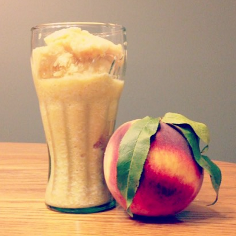

Homemade Peach Ice Cream
Recipe by: James Parkes
- 20+ servings
- 30 min
- 20 min
Ingredients
- 2 (1 lb) bags of ice
- 1 box of rock/ice cream salt
- 15-20 fresh peaches
- 1 egg beater
- 3 cups sugar
- 1 tbsp vanilla flavoring
- 1 tbsp lemon juice
- 1 cup whole milk
Directions
- Wash, peel, and cut peaches into medium size pieces.
- Add at least 1 tbsp lemon juice to peaches until all peaches are lightly covered. The lemon juice will keep the peaches from browning.
- Add peaches, sugar, and milk into the blender/food processor and blend until all ingredients are fully incorporated. The peaches are not meant to be fine pieces, but rather small chunks. Pour the mixture into ice cream container to be used in the freezing process. Repeat this process until all the peaches have been blended. Once this step is complete, at least 3 cups of sugar and 1 cup of milk should be incorporated into the mixture. Make sure that once during the blending process you add the egg beater to the mixture to be incorporated.
- To fill the ice cream container to the fill line, continue to add milk. Once the mixture has been topped off to the fill line, add sugar to taste. Almost always, the mixture requires more sugar to be added than the recipe calls.
- Place the ice cream container inside the ice cream machine. Start the ice cream machine. While the ice cream machine is running, continue to add layers of ice and rock salt to the sides of the machine to freeze the ice cream so that the entire container is surrounded by ice and rock salt. Once the machine finishes, the ice cream can be served immediately or placed into the freezer to serve later.